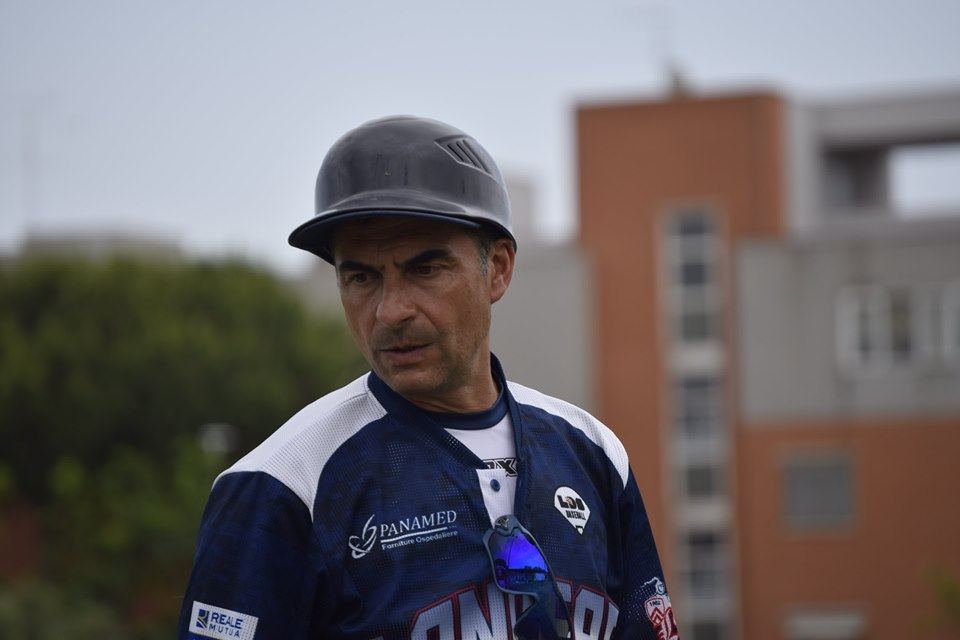
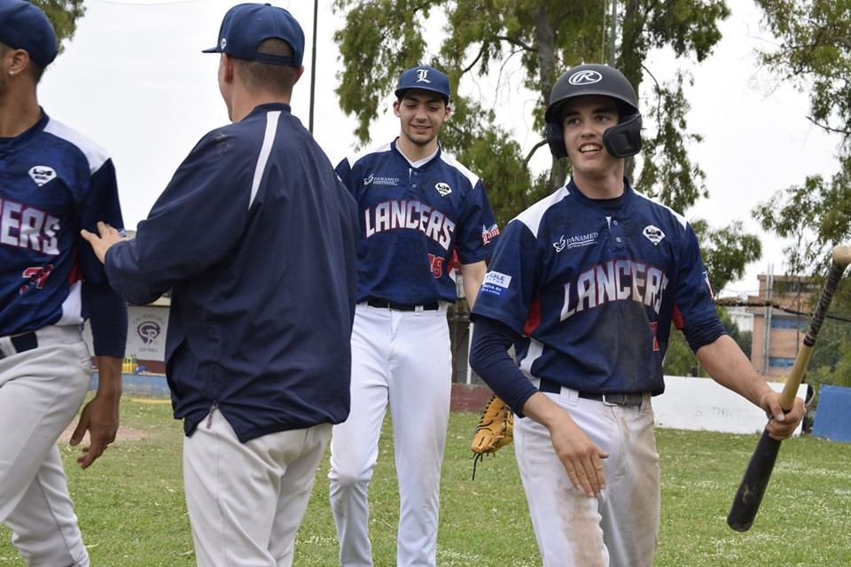

Inizia il girone di ritorno per i Lancers che si trovano ad affrontare in trasferta il Cali Roma XIII a distanza di una settimana dalle partite di recupero; partite terminate nettamente a favore dei lastrigiani con ben 30 punti segnati e soli 5 subiti.
Già alla vigilia si sapeva che non sarebbero state due gare facili in quanto la formazione romana nel corso della settimana ha ingaggiato due lanciatori partenti di spessore: Florian e Morese, con quest’ultimo che ha vestito la casacca bianco/blu nella stagione scorsa.
Ad oggi questo doppio colpo può cambiare gli equilibri del Girone D in quanto entrambi i pitcher vantano esperienza in categorie quali Serie A2 e A1; Florian ha anche vestito la casacca azzurra della nazionale italiana nel recente passato.
Si preannunciavano due belle partite e così è stato, mentre ci si aspettava un maggior pugno di ferro da parte della coppia arbitrale e questo purtroppo non si è verificato.
Nel corso delle partite di andata c’erano state scintille tra le due formazioni, o meglio, tra un giocatore romano e la panchina lastrigiana; il giocatore in questione è noto da tempo per atteggiamenti irrispettosi e poco sportivi nei confronti degli avversari.
Questo presupposto, almeno da quanto comunicato dagli arbitri ai rispettivi manager, faceva sì che gli arbitri non avrebbero tollerato nessun tipo di comportamento scorretto da qualsivoglia giocatore o allenatore.
Così purtroppo non è stato e come previsto si sono sentite offese in spagnolo rivolte alla coppia arbitrale, atteggiamenti non sportivi nei confronti della nostra panchina e anche una palla lanciate con rabbia nella direzione dei nostri fotografi; il tutto rimasto beatamente impunito.
Parlando di baseball giocato: torniamo da Roma con un pareggio dolce-amaro; come detto sopra con l’arrivo dei due pitcher la formazione romana è apparsa decisamente rinforzata e dopo una trasferta così lunga non era facile mantenere la concentrazione.
Gara 1 termina 7-6 a favore del Cali Roma XIII dopo una lunga battaglia ; partenza sprint dei lastrigiani con il two run homerun di Diaz che spedisce la palla oltre la recinzione di sinistra.
A piccoli passi la formazione romana recupera segnando un punto al secondo, terzo e quarto inning sul partente Perez; pareggio dei Lancers al quinto e importante sorpasso alla settima ripresa che porta gli ospiti avanti 6-3.
Il Cali Roma approfitta di un calo di Perez e qualche incertezza difensiva per pareggiare nella parte bassa dello stesso frangente di gioco.
Il vantaggio definitivo arriva però all’ottava ripresa: con due out ed un uomo in terza base arriva la battuta in diamante che, nonostante un controllo imperfetto, viene prontamente giocata in prima base.
Il battitore viene però chiamato salvo permettendo al compagno di segnare quello che sarà il definitivo 7 a 6 a favore della squadra di casa.

In gara 2 Menoni viene designato come partente, il diamante interno resta invariato con Becattini a ricevere, Baratella in prima, Cano in seconda, Parrini in terza e Diaz interbase.
All’esterno ancora Geri a sinistra e Pasquini al centro, Marashi prende il posto di Repetti a destra e Belnabe sostituisce Ortiz come battitore designato.
Siamo ancora noi a passare avanti al primo attacco con il triplo di Diaz che spinge a punto Parrini, un lancio pazzo fa correre a casa base anche l’interno di origini cubane.
Pronta reazione romana con due punti utili al pareggio al secondo inning, pareggio vanificato dai 3 punti segnati dal lineup lastrigiano per il momentaneo 5-2.
La partita resta in sostanziale equilibrio, il Cali Roma metti in cascina un punto ma i Lancers ne costruiscono altri 2 e con caparbietà difendono ogni attacco romano, anche quando a basi piene una palla forte e radente viene intercettata e trasformata in out dal diamante.
Lo staff si dice comunque soddisfatto dei propri giocatori che hanno espresso buon gioco e massima serietà, le parole di Barbieri: “Purtroppo sempre più spesso la correttezza in campo, nei confronti degli ufficiali di gara e degli avversari, non è ripagata. Ma noi andiamo avanti con il nostro percorso”.
Prossimo impegno al vertice con la neo capolista Montefiascone.